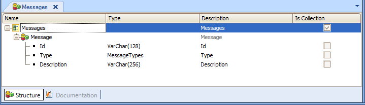
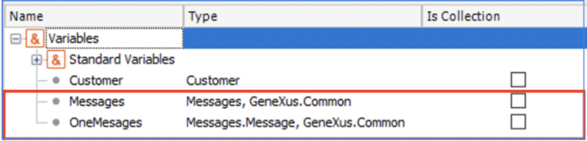

Upon executing the Save, Check, Load or Delete methods, the messages automatically generated by GeneXus (those issued by GeneXus through data consistency controls, uniqueness of Primary Key values, etc.) are triggered as well as your own Error and Msg rules defined in the Transaction object.
Even when these controls are automatically triggered, for the end user to be aware of this, you must obtain and explicitly show the messages issued.
Now, how do you recover the messages occurred?
You use the structured data type Messages that GeneXus defines automatically upon creating a New - Knowledge Base:

This collection data type is meant to allow access to the messages issued in the execution of a Business Component.
So, with the object to use the Business Component you define two variables:

Suppose you define the Customer Transaction as Business Component (by setting its Business Component property = True):
Customer
{
CustomerId* (Autonumber property = True)
CustomerName
CustomerAddress
CustomerPhone
CustomerEmail
CustomerBirthDate
CustomerAddedDate
CountryId
CountryName
}
Country Transaction:
Country
{
CountryId* (Autonumber property = True)
CountryName
}
Customer rules:
Default(CustomerAddedDate,&today);
error('The customer must be 18 years old or more') if CustomerBirthDate.Age()<18;
Accordingly, a Business Component data type of the Customer Transaction is automatically created in the Knowledge Base and you can define in any object a variable of the new type created. Thus, in any object you define a variable named &customer based on the Customer type and:
&customer.save()
If &customer.Fail()
&Messages = &customer.GetMessages() //you obtain the messages that may have ocurred (you extract and load them in the &Messages collection)
for &oneMessage in &Messages //you iterate the collection
Do case
Case &oneMessage.Id ='PrimaryKeyNotFound'
msg('The customer does not exist')
Case &oneMessage.Id ='ForeignKeyNotFound'
msg('The country does not exist')
Case &oneMessage.Id= 'RecordWasChanged'
msg('The customer record was changed by another user')
Case &oneMessage.Id ='DuplicatePrimaryKey'
msg('A customer with equal identifier already exists')
Otherwise
msg(&oneMessage.Description)
Endcase
endfor
endif
| Id | Type | Description |
| PrimaryKeyNotFound | MessageTypes.Error | Data with the specified key could not be found |
| DuplicatePrimaryKey | MessageTypes.Error | Record already exist |
| ForeignKeyNotFound | MessageTypes.Error | No matching 'TableName' |
| CandidateKeyNotFound | MessageTypes.Error | You can't update a record without reading it first |
| CannotDeleteReferencedRecord | MessageTypes.Error | Invalid delete, related information in 'TableName' |
| RecordIsLocked | MessageTypes.Error | Record is in use by another |
| OutOfRange | MessageTypes.Error | 'AttributeName' is out of range |
| RecordWasChanged | MessageTypes.Error | 'TableName' was changed |
Notes:
- OutOfRange: Applies to an attribute wich has set the Value Range property or an attribute based on an Enumerated Data type.
- If there are any object name conflicts with the Structured Data Type (SDT) "Messages", when a Knowledge Base is converted to 9.0 version, the object will be rename see compatibility section ...
The Error and Msg rules allow you to include Messages in the Messages collection (SDT). When you define Error and Msg rules you can set the Id optional parameter, following this syntax:
Msg('Message phase', Id);
Error('Error phrase', Id);
i.e.: Error("Customer name cannot be empty", CustomerNameCannotBeEmpty) if CustomerName.isempty();
The CustomerNameCannotBeEmpty parameter is considered as the "Id" property of the Messages SDT.
Id
- For the GeneXus standard messages, the "Id" is ever in English, no matter the model configured language.
- "Id", however they can be just a code like "1", "2", "3" or "Error1", "Error2", recommended to define explanatory texts id like "CustomerNameCannotBeEmpty". The reason is that the code will be clearer. For example: "If &Customer.GetMessages().Item(1).Id=CustomerNameCannotBeEmpty is clearer than "If &Customer.GetMessages().Item(1).Id=1"
Type
The "Type" is based on a enumerated domain. You can ask about this values: MessageTypes.Warning and MessageTypes.Error.